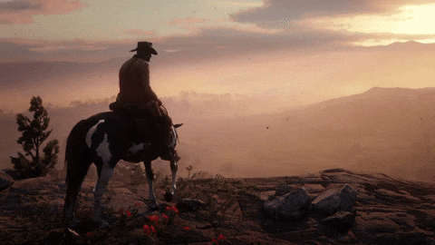

Aujourd’hui, les graphismes des jeux sont rendus avec des niveaux de détail qui rivalisent avec ceux des films à gros budget. Des technologies comme le ray tracing, qui simule le comportement de la lumière, permettent d’obtenir des effets de lumière et d’ombre extrêmement réalistes. Par exemple, des jeux comme Cyberpunk 2077, The Last of Us Part II, ou Red Dead Redemption 2 offrent des mondes ouverts d’une richesse visuelle impressionnante, avec des textures fines, des éclairages dynamiques, et une modélisation des personnages qui peut frôler le photoréalisme.
Le ray tracing est une technologie avancée de rendu graphique utilisée pour simuler de manière réaliste le comportement de la lumière dans un environnement 3D. Elle est utilisée pour produire des effets visuels d’une grande précision, en particulier dans les domaines de l'éclairage, des ombres, des réflexions et des reflets. Le principe du ray tracing repose sur l’idée de suivre le trajet des rayons lumineux à partir de la source de lumière, pour simuler comment ces rayons interagissent avec les objets et les surfaces dans une scène.